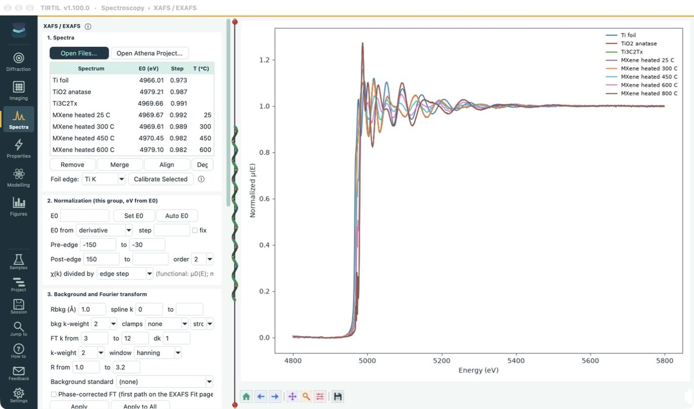

Analyse XRD, XAFS, Raman and microscopy in one app
TIRTIL is a desktop app for MXene and MAX phase research: in-situ XRD series, phase identification, Rietveld through GSAS-II, XAFS and EXAFS fitting like Athena and Artemis, Raman maps, STEM, EDS and EELS, and one page per sample.
Version 1.100.0. Free. Once installed, TIRTIL offers each new version itself.

Getting started
1. InstallUnzip and open TIRTIL. On a Mac, if it says it cannot be checked, right-click TIRTIL and choose Open once.
2. Find your wayThe rail on the left groups pages by what each measurement tells you. ⌘K jumps to any page; ⌘/ opens the animated how-to for the page you are on.
3. Try the examplesEvery how-to has Try It With Example Data and Show Me on the Page, so you can learn each tool before using your own files.
4. Keep your workSessions (⌘S) save everything open; Samples keep each sample's files and results; Make report (⌘R) writes a PDF or Word file.
Tools
Diffraction
Overlay plot
Look at many scans together.
Peak analysis
Peak position, width and lattice parameters against temperature.
In-situ series
What changes with temperature, and when.
Peak ID
Which phases are in a scan.
Rietveld (GSAS-II)
Phase fractions, cell and atoms from a full-pattern fit.
Stacking faults
How ordered the MXene layers are.
SAED
Ring and spot patterns from the TEM: d-spacings and phases.
Imaging
SEM
Sizes and spacings in SEM images.
STEM image
Atom columns, lattice spacings and strain.
Flake sizes
Lateral size and thickness of flakes.
Spectra
XRF
Elements, and how much of each.
EDS
Where each element is, and the formula.
EELS
Bonding, oxidation state and thickness.
Raman
Bonds, oxidation and carbon.
Raman map
Where each band is strong, shifted or broad across a sample.
UV-Vis
Band gaps, plasmon bands and degradation.
XAFS / EXAFS
Oxidation state, neighbours and bond lengths from X-ray absorption.
EXAFS fit
Bond lengths, coordination and disorder from FEFF path fits.
Properties
Modelling
Figures
Samples and project
More
UpdatesTIRTIL checks this page once a day and offers new versions; Settings › Check for updates turns it off.
FeedbackFeedback on the rail sends a message anonymously (no name or email) or by email.
Your data stays yoursFiles are read where they are; nothing is uploaded. FEFF and the X-ray tables are downloaded once from PyPI when you ask for them.